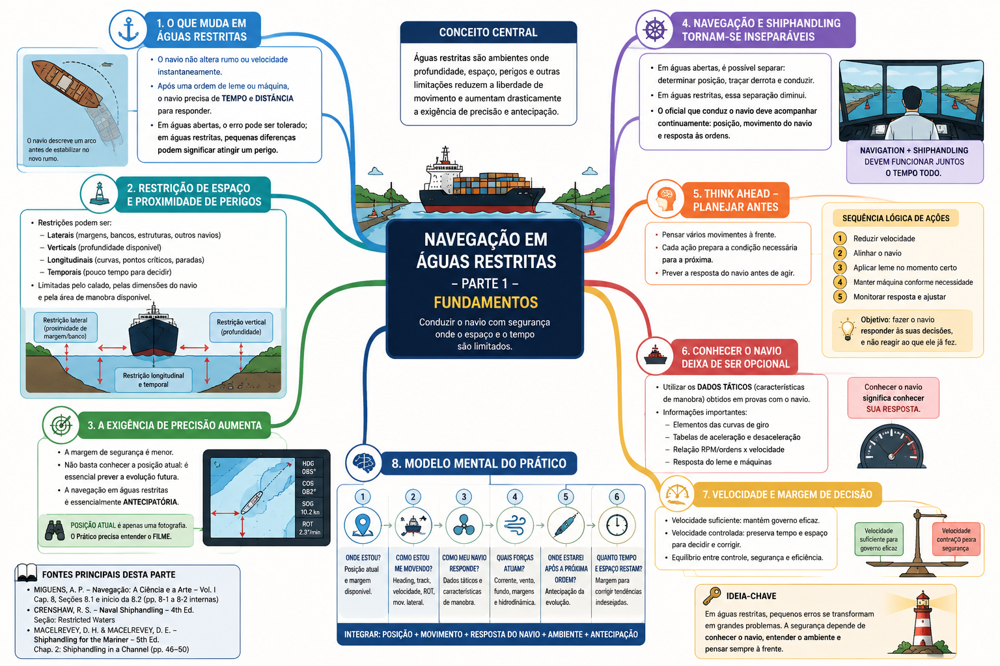
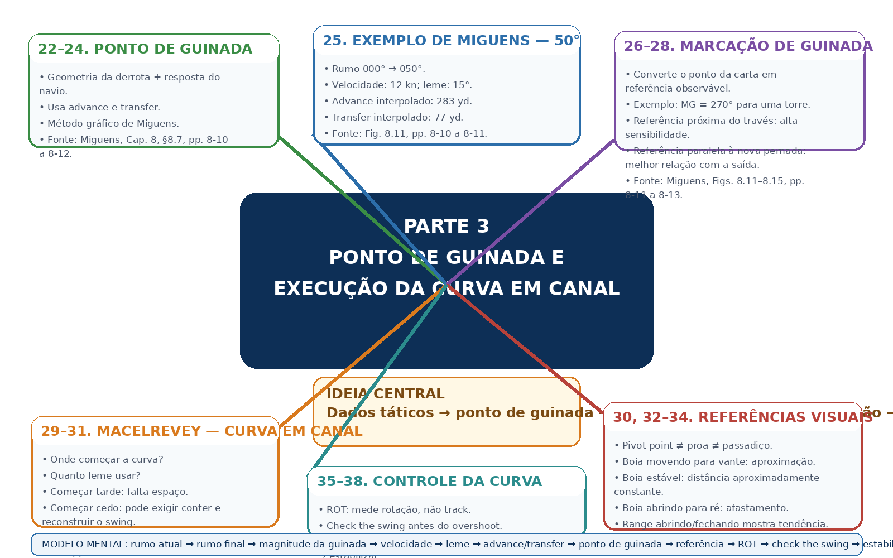
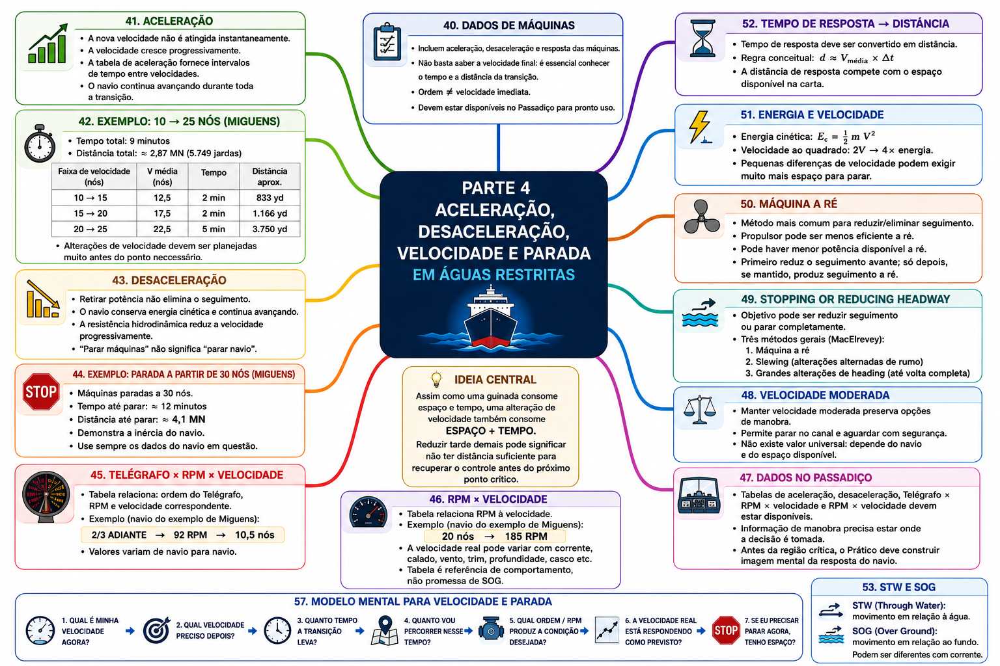

⚓ Navegação em Águas Restritas
Restricted Waters Navigation
A navegação em águas restritas representa uma condição na qual a condução do navio passa a ser fortemente influenciada pela proximidade de perigos, pela limitação do espaço disponível, pela profundidade da água, pela geometria do canal, pelas condições ambientais e pelas próprias características de manobra da embarcação.
Nessas circunstâncias, uma alteração de rumo, uma mudança de velocidade ou um deslocamento lateral aparentemente pequeno podem consumir rapidamente a margem de segurança disponível.
Por essa razão, esta aula não tratará a navegação em águas restritas como simples continuação da navegação costeira.
O objetivo será estudar como o navio deve ser planejado, monitorado e conduzido quando sua liberdade de movimento é limitada pelo ambiente ao seu redor.
O desenvolvimento combinará os fundamentos de navegação de Navegação: A Ciência e a Arte, a abordagem operacional de shiphandling apresentada por Crenshaw e MacElrevey, e, nas partes correspondentes, os princípios de Bridge Team Management, Bridge Procedures Guide e Theory and Practices of Marine Pilotage.
📊 Progresso da Aula
0% da aula concluída
📘 Identificação da aula
Disciplina: Navegação
Assunto: Navegação em Águas Restritas
Termo técnico principal: Restricted Waters Navigation
Nível: PSCPP
Abordagem: navegação, pilotagem, shiphandling e gerenciamento da passagem em ambiente restrito.
⏱ Cronômetro de Estudo
📖 Estudo
Estude com concentração durante o ciclo e utilize a pausa antes de iniciar uma nova sessão.
📋 Conteúdo programático
III — Navegação em Águas Restritas
Esta aula integra os conteúdos diretamente relacionados à condução da embarcação em águas restritas, preservando aulas específicas já existentes no módulo Navegação.
- fundamentos da navegação em águas restritas;
- dados táticos e características de manobra;
- curvas de giro e seus elementos;
- planejamento de guinadas;
- variações de velocidade;
- condução em canais e rios;
- navegação de segurança;
- navegação com corrente;
- marés e correntes de maré;
- profundidade e águas rasas;
- under-keel clearance;
- squat;
- efeitos de margem;
- curvas em canais;
- encontro e ultrapassagem de embarcações;
- navegação fluvial;
- navegação batimétrica;
- navegação com mau tempo em áreas restritas;
- passage planning em águas restritas;
- executing the plan;
- monitoring the ship's progress;
- teamwork;
- navegação com Prático a bordo;
- procedimentos operacionais relacionados à praticagem;
- contingências durante a passagem.
🎯 Objetivos de aprendizagem
Ao concluir esta aula, o aluno deverá ser capaz de:
- compreender por que a navegação em águas restritas exige precisão de posicionamento superior àquela normalmente necessária em águas abertas;
- relacionar as dimensões do navio, calado, velocidade e características de manobra ao espaço disponível;
- interpretar e empregar os dados táticos no planejamento e execução da passagem;
- avaliar corretamente avanço, afastamento, diâmetro tático e demais elementos da curva de giro;
- antecipar a trajetória da proa, do centro do navio e da popa durante uma alteração de rumo;
- planejar alterações de velocidade considerando tempo e distância necessários para que o navio responda;
- avaliar os efeitos de águas rasas, restrição lateral, squat e bank effect;
- interpretar os efeitos da corrente sobre heading, track, SOG e STW;
- conduzir conceitualmente curvas, encontros e ultrapassagens em canais;
- empregar referências visuais, radar, ecobatímetro e demais recursos pertinentes para monitorar a segurança da passagem;
- compreender os princípios de passage planning, execution e monitoring aplicados às águas restritas;
- integrar Prático, Comandante e equipe do passadiço ao processo de navegação;
- identificar antecipadamente situações degradadas e contingências;
- utilizar corretamente a terminologia técnica em inglês marítimo.
📚 Publicações utilizadas
Navegação: A Ciência e a Arte — Volume I
Autor: Altineu Pires Miguens.
É uma das referências fundamentais desta aula.
O Capítulo 8 — Uso dos Dados Táticos do Navio na Navegação em Águas Restritas será particularmente importante para compreender por que o navio real não altera instantaneamente seu rumo ou sua velocidade.
Na edição fornecida, o capítulo ocupa a numeração interna 8-1 a 8-21, seguido do apêndice de exercícios a partir de 8-22.
Também serão empregados, nas partes correspondentes, os capítulos indicados pela bibliografia oficial sobre navegação costeira, estimada, linhas de segurança, marés, correntes, instrumentos, publicações, auxílios à navegação e radar.
Naval Shiphandling — 4th Edition
Autor: Russell Sydnor Crenshaw.
A publicação complementará a abordagem do navegante com a perspectiva do oficial que efetivamente conduz o navio.
Será particularmente importante a seção Restricted Waters, na qual Crenshaw discute a mudança de ambiente existente quando o navio deixa as águas abertas e passa a operar dentro dos limites de um porto e de canais estreitos.
A obra será utilizada principalmente para aspectos de pilotagem visual, uso de referências, correntes, condução em canais, planejamento antecipado e percepção contínua da posição do navio.
Shiphandling for the Mariner — 5th Edition
Autores: Daniel H. MacElrevey e Daniel E. MacElrevey.
O Chapter 2 — Shiphandling in a Channel inicia-se na página impressa 46 da edição fornecida.
O capítulo aborda diretamente:
- Bank Effects;
- Planning Ahead;
- Tide and Current;
- Types of Rudders and Propulsion Systems;
- Effect of Trim on Handling Characteristics;
- Making a Turn in a Channel;
- Using Aids to Navigation When Turning;
- Meeting Another Vessel or Tow;
- Overtaking Another Vessel or Tow;
- Using Shiphandling Instrumentation;
- The Basics of Squat;
- Underkeel Clearance;
- Stopping and Maneuvering in a Channel.
Esses assuntos serão desenvolvidos nas partes correspondentes, sem antecipá-los superficialmente nesta introdução.
Bridge Team Management — 2nd Edition
Autores: A. J. Swift e T. J. Bailey.
A bibliografia oficial do PSCPP determina os Chapters 1 a 7, abrangendo: Bridge Team Management, Passage Appraisal, Passage Planning, Executing the Passage/Voyage Plan, Monitoring the Ship's Progress, Teamwork e Navigating with a Pilot on Board.
Bridge Procedures Guide — 6th Edition
International Chamber of Shipping.
A bibliografia oficial seleciona:
- Chapter 2 — Effective Bridge Organisation;
- Chapter 3 — Passage Planning;
- Chapter 5 — Operation and Maintenance of Bridge Equipment;
- Chapter 6 — Pilotage.
Theory and Practices of Marine Pilotage
Autor: Santosha K. Nayak.
A bibliografia do PSCPP seleciona:
- Chapter 5 — Entering Pilotage Waters;
- Chapter 6 — Safe Positioning of a Vessel in the Channel;
- Chapter 13 — Manoeuvering Inside Harbour Limits.
A publicação será utilizada principalmente para aproximar a teoria da perspectiva operacional da praticagem.
📚 Método bibliográfico desta aula
A partir desta nova versão, os conceitos importantes não serão apresentados como afirmações isoladas.
Sempre que possível, cada tópico indicará:
- publicação;
- capítulo ou seção;
- página ou numeração interna confirmada;
- publicações complementares;
- e diferenças de abordagem entre autores, quando existirem.
Quando uma página não puder ser confirmada com segurança, ela não será inventada.
🗂 Organização da aula
A aula será desenvolvida progressivamente, partindo do problema fundamental até situações operacionais complexas.
- fundamentos da navegação em águas restritas;
- dados táticos e comportamento real do navio;
- curvas de giro e dimensões da trajetória;
- planejamento de guinadas em canais;
- alterações de velocidade, parada e controle do movimento;
- águas rasas, UKC e squat;
- efeito de margem;
- correntes em águas restritas;
- marés e correntes de maré;
- curvas em rios e canais;
- encontro entre embarcações;
- ultrapassagem em canais;
- navegação fluvial;
- navegação batimétrica;
- mau tempo em águas restritas;
- passage planning;
- execution e monitoring;
- pilotage e bridge team;
- contingências;
- integração operacional e questões no padrão PSCPP.
PARTE 1 — FUNDAMENTOS DA NAVEGAÇÃO EM ÁGUAS RESTRITAS
Antes de estudar curvas de giro, bank effect, squat, correntes ou técnicas de pilotagem, é necessário compreender por que uma água restrita modifica a própria natureza do problema de navegação.
O primeiro passo, portanto, não é aprender uma manobra.
É compreender a mudança de escala, de precisão e de tempo disponível para tomar decisões.
1. O que muda quando o navio entra em águas restritas?
Miguens inicia o estudo específico dos dados táticos em águas restritas fazendo uma distinção fundamental entre o modelo simplificado frequentemente utilizado na navegação e o comportamento físico real da embarcação.
Em navegação oceânica e mesmo em determinadas situações de navegação costeira, pode-se trabalhar, para fins de construção da derrota, como se uma ordem de mudança de rumo produzisse imediatamente o novo rumo e como se uma ordem de mudança de velocidade produzisse imediatamente a nova velocidade.
Esse modelo é útil para determinados cálculos e representações.
Mas o navio real não funciona dessa maneira.
Depois de uma ordem de leme, a embarcação precisa de determinado intervalo de tempo e determinada distância para desenvolver a guinada e estabilizar-se na nova condição.
Da mesma forma, quando a potência ou a ordem de máquina é modificada, a velocidade do navio não muda instantaneamente.
Existe uma resposta dinâmica, durante a qual o navio continua avançando e ocupando espaço.
🧠 Primeira mudança de raciocínio
Em águas abertas, um erro de algumas centenas de metros pode não produzir uma consequência imediata.
Em águas restritas, essas mesmas centenas de metros podem representar:
- a largura inteira de um canal;
- a distância até uma margem;
- a distância até um banco;
- o espaço necessário para completar uma guinada;
- ou a diferença entre passar livre e atingir um perigo.
⚓ Aplicação Operacional
O Prático não pode pensar apenas:
“quando chegarmos aqui, colocaremos leme.”
Ele precisa pensar:
“se o leme for aplicado aqui, onde estarão a proa, o centro do navio e a popa durante toda a evolução?”
Essa mudança de raciocínio é a base de toda esta aula.
📚 Fonte bibliográfica
Fonte principal: MIGUENS, Altineu Pires. Navegação: A Ciência e a Arte — Volume I.
Capítulo 8: Uso dos Dados Táticos do Navio na Navegação em Águas Restritas.
Seção 8.1: Dados Táticos ou Características de Manobra dos Navios.
Localização confirmada: página interna 8-1, prosseguindo em 8-2.
2. Restrição de espaço e proximidade dos perigos
Miguens caracteriza a situação de águas restritas a partir de limitações que afetam diretamente a liberdade de movimento do navio.
O navio pode estar limitado:
- pelo seu calado;
- pelas dimensões da área disponível para manobra;
- ou simultaneamente pelos dois fatores.
Isso significa que a restrição não precisa existir apenas lateralmente.
Ela pode existir:
- lateralmente, pelas margens, bancos, estruturas ou outros navios;
- verticalmente, pela profundidade disponível;
- longitudinalmente, pela pequena distância até uma curva, perigo, berço, ponte ou ponto de parada;
- e temporalmente, porque as decisões precisam ser tomadas antes que a situação evolua além da possibilidade de correção.
🧠 Água restrita não significa apenas “canal estreito”
O conceito operacional é mais amplo.
O elemento essencial é a existência de uma restrição relevante à liberdade de movimento ou à margem de segurança da embarcação.
⚓ Pergunta do Prático
Ao analisar uma passagem, não pergunte somente:
“qual é a largura do canal?”
Pergunte também:
- qual é minha boca?
- qual é meu comprimento?
- qual é meu calado?
- quanto espaço a curva exige?
- quanto a popa abrirá?
- qual é minha UKC?
- qual é minha velocidade?
- qual é a corrente?
- quanto tempo tenho até o próximo ponto crítico?
📚 Fonte bibliográfica
Miguens — Volume I
Capítulo 8, Seção 8.1, página interna 8-1.
Miguens relaciona expressamente a navegação em águas restritas à proximidade dos perigos e às limitações impostas pelo calado e pelas dimensões da área de manobra.
Complemento operacional: Crenshaw, Naval Shiphandling, seção Restricted Waters.
Crenshaw descreve a entrada no porto como uma mudança concreta das condições de shiphandling: o canal estreita, a profundidade diminui e a quantidade de referências e auxílios aumenta.
3. A exigência de precisão aumenta
Uma das afirmações centrais de Miguens é que, em águas restritas, a precisão de posicionamento exigida é muito maior.
A razão é física e operacional:
o espaço entre a posição segura e o perigo é menor.
Consequentemente, o navegante precisa conhecer não apenas a posição atual, mas também prever a evolução futura da embarcação.
Essa previsão depende das características reais de manobra do navio.
POSIÇÃO ATUAL × POSIÇÃO FUTURA
Uma posição perfeita no instante atual não garante uma situação segura alguns minutos depois.
A navegação em águas restritas é essencialmente antecipatória.
⚓ Aplicação Operacional
Imagine um navio perfeitamente sobre a centerline de um canal.
Essa informação, isoladamente, não responde se ele está seguro.
Ainda precisamos saber:
- qual é o heading?
- qual é o ROT?
- qual é o movimento lateral?
- qual é a velocidade?
- qual é a corrente?
- onde está o próximo WOP?
- quanto espaço existe para interromper uma tendência?
A posição é uma fotografia.
O Prático precisa compreender o filme.
📚 Fonte bibliográfica
Miguens — Volume I
Capítulo 8, Seção 8.1, página interna 8-1.
A necessidade de maior precisão é apresentada pelo autor como consequência direta da proximidade dos perigos e das limitações da área de manobra.
4. Navegação e Shiphandling tornam-se inseparáveis
Crenshaw apresenta uma observação especialmente importante para compreender a navegação em porto.
Quando o navio está em águas abertas, é possível manter uma separação relativamente clara entre:
- determinar a posição;
- traçar a derrota;
- e conduzir o navio.
À medida que o canal estreita e a situação passa a evoluir rapidamente, essa separação diminui.
O oficial que está conning the ship precisa compreender continuamente onde o navio está, para onde está indo e como responderá às próximas ordens.
Crenshaw destaca que, em um porto restrito, a equipe de navegação pode manter o plot e fornecer posições, mas situações como:
- passagem entre boias em canal estreito;
- encontro com outros navios;
- guinadas complexas;
- uso simultâneo de máquinas e leme
podem evoluir mais rapidamente do que o ciclo formal de determinação e plotagem da posição.
Por isso, o conning officer também precisa desenvolver uma percepção visual contínua da situação.
🧠 Dois processos simultâneos
NAVIGATION
Onde estou? Onde está a derrota? Onde estão os perigos?
SHIPHANDLING
Como o navio está se movendo? Como responderá? O que acontecerá após minha próxima ordem?
Em águas restritas:
OS DOIS PROCESSOS PRECISAM FUNCIONAR JUNTOS.
⚓ Mentalidade do Prático
O Prático não deve olhar para uma posição eletrônica e enxergar apenas um símbolo sobre a carta.
Ele deve enxergar:
uma embarcação com comprimento, boca, calado, inércia, velocidade, ROT, movimento lateral e capacidade limitada de resposta.
📚 Fonte bibliográfica
Crenshaw, Russell Sydnor. Naval Shiphandling. 4th Edition.
Seção: Restricted Waters.
A seção inicia discutindo as diferenças encontradas quando o navio passa a operar dentro dos limites de um porto, incluindo canal estreito, menor profundidade, multiplicidade de referências e necessidade de acompanhar continuamente a posição.
Fonte complementar: Miguens, Volume I, Capítulo 8, Seção 8.1, pp. internas 8-1–8-2.
5. Think Ahead — o navio deve estar atrás do raciocínio
MacElrevey transforma o planejamento antecipado em um dos princípios centrais do shiphandling.
No Chapter 2 — Shiphandling in a Channel, a seção Planning Ahead aparece logo após a discussão inicial sobre bank effects.
O princípio é simples, mas operacionalmente profundo:
o shiphandler deve pensar vários movimentos à frente.
A manobra deve ser construída como uma sequência lógica, na qual cada ação prepara a condição necessária para a próxima.
Isso significa compreender:
- como o navio se comporta;
- quando reduzir velocidade;
- como utilizar as forças existentes;
- quando aplicar leme;
- quando utilizar máquina;
- e qual condição a embarcação apresentará depois de cada ação.
🧠 REATIVO × ANTECIPATÓRIO
Condução reativa:
o navio começa a sair da situação desejada → o operador percebe → ordena uma correção.
Condução antecipatória:
o operador reconhece a tendência → prevê a evolução → age antes que o desvio se desenvolva plenamente.
⚓ Princípio fundamental
Em águas restritas, o objetivo é:
fazer o navio responder às suas decisões, e não passar a reagir continuamente ao que o navio já fez.
📚 Fonte bibliográfica
MacElrevey & MacElrevey. Shiphandling for the Mariner. 5th Edition.
Chapter 2: Shiphandling in a Channel.
Seção: Planning Ahead.
Página impressa confirmada: 49.
A seção apresenta explicitamente o princípio de thinking ahead como fundamento da condução eficiente e segura.
6. Conhecer o navio deixa de ser opcional
Se o navio não responde instantaneamente, então o planejamento só pode ser preciso quando suas características de manobra são conhecidas.
Miguens denomina essas informações dados táticos e observa que, nos navios mercantes, são normalmente tratadas como características de manobra.
Segundo o autor, esses dados normalmente abrangem:
- elementos das curvas de giro;
- informações de máquinas;
- tabelas de aceleração e desaceleração;
- relações entre demanda, RPM e velocidade;
- correspondência entre ordens do telégrafo de manobra, rotações e velocidades.
Essas informações são obtidas a partir das provas realizadas com o navio e devem estar disponíveis para consulta operacional.
🧠 Conhecer o navio significa conhecer sua resposta
Não basta saber:
- LOA;
- boca;
- calado;
- deslocamento.
Para conduzi-lo, é necessário saber também:
quanto espaço e quanto tempo ele precisa para responder.
⚓ Aplicação Operacional
Dois navios com dimensões semelhantes não devem ser considerados automaticamente equivalentes em manobra.
Diferenças de:
- forma do casco;
- leme;
- propulsor;
- potência;
- calado;
- trim;
- carregamento
podem produzir respostas diferentes.
Por isso, o Pilot–Master Exchange e as informações de manobra do navio terão importância fundamental mais adiante nesta aula.
📚 Fonte bibliográfica
Miguens — Volume I
Capítulo 8 — Uso dos Dados Táticos do Navio na Navegação em Águas Restritas.
Seção 8.1: Dados Táticos ou Características de Manobra dos Navios.
Páginas internas confirmadas: 8-1 e 8-2.
O detalhamento das curvas de giro começa na Seção 8.2, página interna 8-2, e será desenvolvido integralmente na próxima parte.
7. Velocidade também determina quanto tempo resta para decidir
MacElrevey chama atenção para uma relação que acompanhará praticamente toda a aula:
velocidade e controle não podem ser analisados separadamente.
O navio precisa possuir movimento suficiente através da água para que seus sistemas de governo possam produzir resposta adequada.
Ao mesmo tempo, velocidade excessiva reduz o tempo disponível para tomar decisões e pode intensificar efeitos hidrodinâmicos indesejados em águas restritas.
Existe, portanto, um compromisso operacional:
⚖️ O equilíbrio
VELOCIDADE SUFICIENTE
para manter capacidade de governo
×
VELOCIDADE CONTROLADA
para preservar tempo, espaço e capacidade de reação.
⚠ Atenção do Prático
“Slow down” não é uma solução automática para qualquer problema.
Da mesma maneira, “mais máquina” não é uma solução automática para falta de controle.
É necessário compreender:
- qual velocidade o navio possui através da água;
- qual velocidade possui sobre o fundo;
- quanto fluxo chega ao leme;
- qual é a corrente;
- quanto espaço resta;
- e quais efeitos hidrodinâmicos estão presentes.
📚 Fonte bibliográfica
MacElrevey & MacElrevey, Shiphandling for the Mariner, 5th Edition.
Chapter 2 — Shiphandling in a Channel.
A discussão sobre velocidade, governo e disponibilidade de potência aparece no desenvolvimento do capítulo, inclusive na seção Types of Rudders and Propulsion Systems, a partir da página impressa 50.
O tema será retomado com maior profundidade nas partes sobre parada, correntes, bank effect e águas rasas.
8. O modelo mental fundamental do Prático
A partir das três perspectivas que iniciaram esta aula, podemos construir um primeiro modelo mental.
Miguens mostra que o navio necessita de tempo e distância para responder.
Crenshaw mostra que, em águas restritas, o conning officer precisa acompanhar a situação continuamente e não pode depender exclusivamente de uma posição formal obtida alguns instantes antes.
MacElrevey transforma essa necessidade em filosofia de condução:
THINK AHEAD.
🧠 A sequência fundamental
1 — ONDE ESTOU?
Posição atual e margem disponível.
2 — COMO ESTOU ME MOVENDO?
Heading, track, velocidade, ROT e movimento lateral.
3 — COMO MEU NAVIO RESPONDE?
Dados táticos e características de manobra.
4 — QUAIS FORÇAS ESTÃO ATUANDO?
Corrente, vento, fundo, margens e interação hidrodinâmica.
5 — ONDE ESTAREI DEPOIS DA PRÓXIMA ORDEM?
Antecipação da evolução.
6 — QUANTO ESPAÇO E TEMPO RESTAM?
Margem para corrigir uma evolução diferente da prevista.
⚓ Síntese da Parte 1
A navegação em águas restritas não consiste simplesmente em manter um navio entre duas margens.
Ela exige integrar:
POSIÇÃO + MOVIMENTO + RESPOSTA DO NAVIO + AMBIENTE + ANTECIPAÇÃO.
Essa equação conceitual será a base para todas as próximas partes.
🌐 Terminologia essencial da Parte 1
| Inglês marítimo | Português | Significado operacional |
|---|---|---|
| Restricted Waters | Águas restritas | Ambiente em que profundidade, espaço, perigos ou outras limitações reduzem significativamente a liberdade de movimento ou a margem de segurança. |
| Shiphandling | Condução / manobra do navio | Aplicação prática do conhecimento sobre a resposta do navio às forças, comandos e condições ambientais. |
| Conning | Condução direta do navio | Ato de dirigir a movimentação do navio por meio de ordens de rumo, leme, máquina e outros comandos pertinentes. |
| Conning Officer | Oficial conduzindo o navio | Pessoa que exerce a condução direta da embarcação naquele momento. |
| Manoeuvring Characteristics | Características de manobra | Informações que descrevem como o navio responde a alterações de leme, máquina e condição de movimento. |
| Tactical Data | Dados táticos | Terminologia empregada por Miguens para dados de manobra como curva de giro e informações de aceleração e desaceleração. |
| Think Ahead | Pensar antecipadamente | Princípio de planejar as ações antes que o comportamento do navio exija uma resposta reativa. |
| Safe Water | Água segura | Área na qual profundidade, perigos e demais limitações permitem a passagem segura da embarcação considerada. |
| Harbour Chart | Carta do porto | Carta utilizada para planejamento e acompanhamento da navegação portuária. |
| Danger Bearing | Marcação de perigo | Marcação estabelecida para auxiliar a distinguir a região segura da região perigosa. |
🧠 Mapa Mental — Parte 1
O mapa mental desta parte deverá sintetizar somente o conteúdo técnico estudado, sem reproduzir a interface do aplicativo.

Mapa Mental — Parte 1. Fundamentos da Navegação em Águas Restritas: posição, restrição de espaço, dados do navio, antecipação, velocidade e filosofia Think Ahead.
📚 Fontes específicas da Parte 1
MIGUENS, Altineu Pires. Navegação: A Ciência e a Arte — Volume I.
Capítulo 8 — Uso dos Dados Táticos do Navio na Navegação em Águas Restritas.
Seções utilizadas nesta parte: 8.1 e introdução da 8.2.
Páginas internas utilizadas: 8-1 a 8-2.
CRENSHAW, Russell Sydnor. Naval Shiphandling. 4th Edition.
Seção: Restricted Waters.
Conteúdo utilizado: mudança das condições entre águas abertas e porto, necessidade de conhecimento contínuo da posição, pilotagem visual, preparação da carta e estudo antecipado do porto.
MACELREVEY, Daniel H.; MACELREVEY, Daniel E. Shiphandling for the Mariner. 5th Edition.
Chapter 2 — Shiphandling in a Channel.
Páginas impressas utilizadas: 46–50, especialmente Planning Ahead e o início da discussão sobre velocidade, leme e propulsão.
PARTE 2 — DADOS TÁTICOS DO NAVIO E CURVA DE GIRO
Na Parte 1 estabelecemos um princípio fundamental:
em águas restritas, o navegante precisa antecipar onde o navio estará depois de uma determinada ordem.
Essa antecipação não deve depender apenas da experiência subjetiva.
O próprio navio fornece informações objetivas sobre sua capacidade de manobra.
Miguens reúne essas informações sob a denominação de dados táticos ou características de manobra.
Nesta parte, o estudo será concentrado em uma das informações mais importantes para a navegação em águas restritas:
a curva de giro do navio.
Não estudaremos a curva apenas como uma figura geométrica.
Vamos interpretá-la como uma representação do espaço efetivamente necessário para que um navio altere seu rumo.
9. Dados táticos ou características de manobra
Miguens emprega a expressão dados táticos para designar informações que permitem conhecer o comportamento do navio durante determinadas manobras.
No contexto mercante, essas informações aparecem normalmente associadas às características de manobra da embarcação.
Sua importância para a navegação em águas restritas decorre de um fato elementar:
uma ordem não produz instantaneamente o resultado desejado.
Quando o leme é aplicado, o navio necessita de tempo e percorre determinada distância até desenvolver a guinada.
Quando uma ordem de máquina é modificada, também existe um intervalo entre a ordem, a alteração do regime propulsivo e a resposta efetiva do movimento da embarcação.
Assim, os dados de manobra permitem substituir uma ideia vaga de “como o navio deve responder” por informações obtidas a partir do comportamento da própria embarcação.
🧠 Conceito essencial
DADOS TÁTICOS = MEMÓRIA DE COMO O NAVIO RESPONDE.
Eles ajudam o navegante a transformar:
ORDEM → RESPOSTA → TEMPO → DISTÂNCIA
em informação utilizável no planejamento da passagem.
⚓ Aplicação Operacional
Ao preparar uma alteração de rumo, não basta conhecer o novo rumo desejado.
O Prático precisa estimar:
- quando iniciar a guinada;
- quanto o navio continuará avançando;
- quanto se deslocará lateralmente;
- quanto espaço todo o casco ocupará;
- e em que momento a guinada deverá ser controlada.
A curva de giro fornece parte fundamental dessa informação.
📚 Fonte bibliográfica
MIGUENS, Altineu Pires. Navegação: A Ciência e a Arte — Volume I.
Capítulo 8: Uso dos Dados Táticos do Navio na Navegação em Águas Restritas.
Seção 8.1: Dados Táticos ou Características de Manobra dos Navios.
Páginas internas confirmadas: 8-1 a 8-2.
A curva de giro passa a ser desenvolvida especificamente na Seção 8.2.
10. Turning Circle — a curva de giro do navio
A curva de giro, ou turning circle, representa a trajetória descrita pelo navio durante uma guinada realizada sob condições determinadas.
Seu valor operacional não está apenas em mostrar que o navio consegue mudar de rumo.
A curva permite visualizar quanto espaço é consumido durante essa mudança.
Para a navegação em águas restritas, essa informação é decisiva.
Uma derrota pode parecer geometricamente possível quando observada apenas como duas linhas retas unidas por uma curva.
Entretanto, o navio possui:
- comprimento;
- boca;
- inércia;
- movimento lateral;
- rotação;
- e resposta progressiva ao leme.
Por isso, a trajetória real não corresponde a uma simples mudança instantânea de direção.
⚠ Atenção do Prático
O desenho acima não representa valores universais.
Cada navio possui seus próprios dados de manobra.
O diagrama serve para compreender as grandezas; os valores utilizados na operação devem ser os pertinentes à embarcação considerada e às condições aplicáveis.
📚 Fonte bibliográfica
Miguens — Volume I.
Capítulo 8, Seção 8.2 — Curvas de Giro.
A seção começa na página interna 8-2.
11. A guinada não começa como uma circunferência perfeita
Um erro conceitual comum é imaginar que, no instante em que o leme é aplicado, o navio passa imediatamente a descrever uma circunferência de raio constante.
Isso não ocorre.
A resposta é progressiva.
Após a aplicação do leme, a ação hidrodinâmica produz um momento de guinada, mas a embarcação conserva seu movimento anterior por efeito de sua inércia.
A trajetória começa, portanto, com forte componente na direção original.
À medida que a guinada se desenvolve, a orientação do casco, a velocidade angular e o movimento lateral também evoluem.
Somente depois dessa fase transitória o movimento se aproxima de uma condição de giro mais estabelecida.
🧠 Pense na sequência
LEME
↓
FORÇA HIDRODINÂMICA
↓
MOMENTO DE GUINADA
↓
ROTAÇÃO PROGRESSIVA
↓
TRAJETÓRIA CURVA.
⚓ Consequência Operacional
A primeira preocupação ao iniciar uma curva não é apenas:
“o navio vai girar?”
Mas:
“quanto ele continuará avançando antes que a alteração de rumo se torne suficiente?”
É exatamente por isso que o advance é tão importante.
📚 Fontes
Fonte principal: Miguens, Volume I, Capítulo 8, Seção 8.2 — Curvas de Giro.
Complemento conceitual: o material técnico de lemes já desenvolvido no Bridge Trainer trata a resposta como progressiva, com aplicação do leme, desenvolvimento da guinada e estabelecimento da curva.
12. Advance — Avanço
O advance é uma das dimensões fundamentais da curva de giro.
Ele expressa, em essência, quanto o navio avança na direção do rumo inicial durante o desenvolvimento da guinada, considerando a referência angular adotada para sua determinação.
Operacionalmente, o conceito responde a uma pergunta extremamente importante:
depois de iniciar a guinada, quanto espaço o navio ainda consumirá na direção em que vinha navegando?
🧠 ADVANCE = espaço consumido “para a frente”
Imagine uma curva de 90° para boreste.
Mesmo depois de colocar o leme a boreste, o navio continuará avançando na direção do rumo anterior.
Esse avanço precisa ser considerado antes de alcançar:
- uma margem;
- um banco;
- um quebra-mar;
- uma ponte;
- uma curva fechada;
- ou qualquer limite existente à vante.
⚓ Relação com o Wheel-Over Point
O Wheel-Over Point — WOP precisa ser estabelecido antes do ponto geométrico em que se deseja que o navio esteja no novo alinhamento.
Uma das razões é justamente o advance.
Se a guinada for iniciada somente no vértice da alteração de rumo, o navio continuará avançando além daquele ponto enquanto a curva se desenvolve.
📚 Fonte bibliográfica
Miguens — Volume I.
Capítulo 8, Seção 8.2 — Curvas de Giro.
O avanço aparece entre os elementos fundamentais utilizados para descrever a geometria da curva de giro.
13. Transfer — Afastamento
Enquanto o advance descreve o desenvolvimento na direção inicial, o transfer representa o deslocamento transversal do navio em relação à linha do rumo original, para a condição angular considerada.
Em português, Miguens emprega afastamento para essa dimensão.
O transfer permite avaliar quanto o navio já se afastou lateralmente de sua trajetória inicial durante a evolução.
🧠 Memorização
ADVANCE → PARA FRENTE.
TRANSFER → PARA O LADO.
⚓ Aplicação Operacional
Em uma curva de canal, o Prático precisa controlar simultaneamente:
quanto o navio ainda avança
e:
quanto já se deslocou lateralmente.
Essas duas grandezas não são alternativas.
Elas descrevem componentes diferentes da mesma evolução.
📚 Fonte bibliográfica
Miguens — Volume I.
Capítulo 8, Seção 8.2 — Curvas de Giro.
Conceito: afastamento / transfer como elemento geométrico da curva.
14. Tactical Diameter — Diâmetro Tático
O tactical diameter é outra dimensão essencial da capacidade de giro.
Ele está relacionado ao deslocamento transversal atingido quando o navio completa uma alteração de rumo de 180° em relação ao rumo inicial, conforme a definição empregada para a prova de manobra.
Em termos operacionais, o diâmetro tático fornece uma percepção imediata da escala lateral necessária para realizar uma grande alteração de rumo.
🧠 Não confunda
TRANSFER
é o afastamento transversal considerado para uma determinada fase angular da curva.
TACTICAL DIAMETER
é associado à posição alcançada após uma mudança de rumo de 180°.
⚓ Por que isso interessa ao Prático?
Porque um navio pode possuir espaço suficiente para colocar sua proa na direção desejada, mas não necessariamente possuir espaço suficiente para que todo o seu movimento de giro ocorra dentro da área segura.
O diâmetro tático é uma das referências que ajudam a dimensionar essa necessidade espacial.
📚 Fonte bibliográfica
Miguens — Volume I.
Capítulo 8, Seção 8.2 — Curvas de Giro.
Complemento normativo: a IMO utiliza advance e tactical diameter entre os parâmetros dos padrões de manobrabilidade.
As publicações MSC.137(76) e MSC/Circ.1053 fazem parte da bibliografia de Manobrabilidade do projeto e serão usadas apenas quando for necessário discutir os critérios normativos específicos, evitando misturar o conceito geométrico com o padrão de aprovação.
15. Advance não é sinônimo de distância até o Wheel-Over Point
Esta distinção merece atenção porque é fácil transformar um dado da curva de giro em uma regra operacional que a publicação não autoriza utilizar de maneira automática.
O advance é uma característica obtida em determinada condição de manobra.
O Wheel-Over Point, por outro lado, é um elemento do planejamento de uma curva em uma situação concreta.
Sua determinação precisa considerar a geometria da derrota e o comportamento esperado da embarcação nas condições da passagem.
⚠ Erro conceitual
“Meu advance é X, portanto sempre começo qualquer curva X metros antes.”
Esse raciocínio é excessivamente simplificado.
⚓ O dado tático é uma referência, não um piloto automático
Na passagem real, a resposta pode ser influenciada por fatores como:
- velocidade;
- ângulo de leme empregado;
- calado;
- trim;
- profundidade;
- vento;
- corrente;
- restrição lateral;
- condição propulsiva.
A curva de giro fornece uma base de previsão.
A navegação real exige monitoramento da resposta efetiva.
16. A curva não é apenas a trajetória de um ponto
Os dados da curva de giro são extremamente úteis, mas existe uma consideração fundamental para águas restritas:
o navio possui dimensões físicas.
Uma trajetória associada a um ponto de referência não representa automaticamente todo o espaço ocupado pela embarcação.
Durante uma guinada, proa, região central e popa descrevem trajetórias diferentes.
Além disso, o casco muda continuamente sua orientação em relação à trajetória.
Consequentemente, a área varrida pelo navio é maior que uma simples linha traçada na carta.
⚠ Atenção do Prático
Em uma curva próxima a uma margem, estrutura, navio atracado ou outro obstáculo, acompanhar apenas a proa pode produzir uma falsa percepção de segurança.
A pergunta correta é:
“onde passarão todas as partes do meu navio?”
17. Stern Swing — a popa também precisa de espaço
Ao iniciar uma alteração de rumo, a atenção visual tende naturalmente a acompanhar a proa.
Entretanto, a ação do leme e a rotação do navio fazem com que a popa também desenvolva movimento lateral.
Esse movimento, frequentemente referido como stern swing, é particularmente importante quando existem obstáculos próximos ao bordo externo da guinada.
Portanto, uma curva não deve ser avaliada apenas perguntando se existe espaço para a proa entrar no novo alinhamento.
É necessário verificar se existe espaço para a popa abrir durante a evolução.
🧠 Regra visual
PROA ENTRA NA CURVA.
POPA PRECISA DE ESPAÇO NO BORDO OPOSTO.
⚓ Situações críticas
O stern swing merece atenção especial em:
- saídas de cais;
- curvas próximas a estruturas;
- passagens junto a navios atracados;
- canais estreitos;
- entrada e saída de eclusas;
- passagens sob pontes ou através de gates.
📚 Relação bibliográfica
O conceito complementa a interpretação geométrica dos dados táticos de Miguens.
A importância operacional da trajetória de todo o casco é consistente com a abordagem de shiphandling empregada nas publicações operacionais utilizadas nesta aula.
Nesta seção, não atribuímos a Miguens uma definição específica de stern swing que não tenha sido confirmada no trecho consultado.
18. Dados táticos precisam ser interpretados dentro de suas condições
Uma curva de giro não deve ser entendida como uma característica absolutamente fixa e imutável do navio.
Ela representa o comportamento observado sob determinadas condições.
Na operação real, mudanças nas condições do navio e do ambiente podem modificar sua resposta.
Por isso, os dados disponíveis devem ser utilizados como referência técnica, mas associados à observação contínua da manobra efetivamente desenvolvida.
Dados do navio ≠ previsão infalível
A informação tática responde:
“como este navio respondeu nas condições em que o dado foi obtido?”
O Prático ainda precisa avaliar:
“como ele está respondendo agora?”
⚓ Aplicação Operacional
Durante a guinada, compare continuamente o comportamento previsto com o comportamento observado.
Se o navio:
- não desenvolve ROT como esperado;
- avança mais que o previsto;
- apresenta maior movimento lateral;
- ou aproxima-se de um limite mais rapidamente que o planejado,
o dado de planejamento não deve substituir a evidência operacional.
19. Turning Ability — relação com os padrões IMO
Os conceitos de advance e tactical diameter não aparecem apenas como elementos didáticos de uma curva de giro.
Eles também são empregados internacionalmente na avaliação da capacidade de manobra dos navios.
A IMO Resolution MSC.137(76) estabelece padrões para manobrabilidade e utiliza a turning ability como uma das capacidades a serem avaliadas.
A MSC/Circ.1053 fornece notas explicativas para a interpretação e aplicação desses padrões.
⚠ Duas perguntas diferentes
ARQUITETURA NAVAL / PADRÃO IMO:
o navio atende ao padrão estabelecido para capacidade de manobra?
PRATICAGEM:
o espaço disponível nesta passagem é compatível com a resposta deste navio nas condições atuais?
⚓ Não confundir conformidade com margem operacional
Um navio satisfazer um padrão internacional de manobrabilidade não significa que qualquer curva de qualquer canal seja automaticamente segura.
A geometria local, profundidade, corrente, velocidade, vento e margens disponíveis continuam determinando a segurança da passagem.
📚 Fontes normativas complementares
IMO Resolution MSC.137(76) — Standards for Ship Manoeuvrability.
MSC/Circ.1053 — Explanatory Notes to the Standards for Ship Manoeuvrability, Chapters 1–3.
Essas publicações constam da base bibliográfica de Manobrabilidade do Bridge Trainer.
20. Como o Prático deve “ler” uma curva de giro
Uma curva de giro não deve ser memorizada como um conjunto isolado de definições.
Ela deve ser transformada em uma sequência de perguntas operacionais.
1 — Quanto ainda vou avançar?
ADVANCE.
Existe espaço suficiente à vante para permitir que a guinada se desenvolva?
2 — Quanto vou me deslocar lateralmente?
TRANSFER.
Como esse deslocamento se compara à largura e à geometria da área disponível?
3 — Quanto espaço uma grande guinada exige?
TACTICAL DIAMETER.
A escala lateral da evolução é compatível com a área navegável?
4 — Onde passará a popa?
STERN SWING.
Existe obstáculo no bordo externo da guinada?
5 — Qual área todo o navio ocupará?
SWEPT PATH.
A trajetória de um único ponto não é suficiente para avaliar a folga do casco.
6 — A resposta real está coincidindo com a prevista?
MONITOR.
Compare continuamente a evolução observada com o comportamento esperado.
⚓ Síntese Operacional
O objetivo dos dados táticos não é fazer o Prático “decorar números”.
É permitir que ele visualize antecipadamente o espaço que o navio consumirá.
Em águas restritas:
CONHECER A CURVA = CONHECER PARTE DO FUTURO DO MOVIMENTO DO NAVIO.
21. Terminologia técnica da curva de giro
🌐 Inglês marítimo essencial
| Inglês marítimo | Português | Significado operacional |
|---|---|---|
| Turning Circle | Curva / círculo de giro | Trajetória utilizada para representar o comportamento do navio durante uma guinada. |
| Advance | Avanço | Distância desenvolvida na direção do rumo inicial durante a fase considerada da guinada. |
| Transfer | Afastamento | Deslocamento transversal em relação à linha do rumo inicial. |
| Tactical Diameter | Diâmetro tático | Dimensão transversal associada à posição do navio após uma alteração de rumo de 180° na prova de giro. |
| Turning Ability | Capacidade de giro | Capacidade da embarcação de executar uma alteração de rumo dentro de determinadas dimensões. |
| Stern Swing | Abertura / movimento lateral da popa | Movimento lateral da popa durante o desenvolvimento da guinada. |
| Swept Path | Área / faixa varrida | Envelope espacial ocupado pelo conjunto da embarcação durante seu movimento. |
| Wheel-Over Point — WOP | Ponto de início da guinada | Referência utilizada para iniciar uma alteração de rumo planejada. |
| Rate of Turn — ROT | Razão de guinada | Velocidade angular com que o heading do navio se altera. |
| Manoeuvring Characteristics | Características de manobra | Conjunto de informações que descreve a resposta dinâmica da embarcação. |
🧠 Mapa Mental — Parte 2
O mapa mental desta parte deverá representar exclusivamente:
- dados táticos;
- curva de giro;
- advance;
- transfer;
- tactical diameter;
- stern swing;
- swept path;
- e leitura operacional da curva pelo Prático.

Mapa Mental — Parte 2. Dados táticos, curva de giro e interpretação operacional do espaço ocupado pelo navio.
📚 Fontes específicas da Parte 2
MIGUENS, Altineu Pires. Navegação: A Ciência e a Arte — Volume I.
Capítulo 8: Uso dos Dados Táticos do Navio na Navegação em Águas Restritas.
Seções utilizadas: 8.1 — Dados Táticos ou Características de Manobra dos Navios; e 8.2 — Curvas de Giro.
Localização confirmada: Seção 8.1 nas páginas internas 8-1 a 8-2; Seção 8.2 iniciando na página interna 8-2.
IMO. Resolution MSC.137(76) — Standards for Ship Manoeuvrability.
Utilizada como complemento para relacionar advance, tactical diameter e turning ability aos padrões internacionais de manobrabilidade.
IMO. MSC/Circ.1053 — Explanatory Notes to the Standards for Ship Manoeuvrability.
Trecho da bibliografia: Chapters 1–3.
Utilizada como complemento explicativo dos padrões de manobrabilidade.
Observação bibliográfica: os conceitos adicionais de stern swing e swept path foram empregados nesta parte para interpretar operacionalmente a ocupação espacial do casco.
Eles não foram apresentados como definições textuais de Miguens quando essa atribuição não pôde ser confirmada no trecho consultado.
➡ Próxima etapa
Agora sabemos quanto espaço uma guinada pode consumir.
A próxima pergunta é:
COMO TRANSFORMAR ESSES DADOS EM UMA CURVA PLANEJADA DENTRO DE UM CANAL?
Na Parte 3, entraremos no estudo do Wheel-Over Point, planejamento geométrico da curva, controle da guinada, Rate of Turn, referências para iniciar e acompanhar a alteração de rumo e critérios para verificar se o navio está efetivamente seguindo a evolução planejada.
PARTE 3 — DETERMINAÇÃO DO PONTO DE GUINADA E EXECUÇÃO DA CURVA EM CANAL
Na Parte 2, estudamos os dados táticos do navio e aprendemos a interpretar advance, transfer, tactical diameter, stern swing e a área ocupada pelo casco durante uma guinada.
Agora precisamos transformar essas informações em uma decisão concreta de navegação:
onde o navio deve começar a guinar?
Miguens trata diretamente desse problema na Seção 8.7, Determinação do Ponto de Guinada.
O problema surge sempre que, durante uma passagem em águas restritas, a derrota planejada apresenta uma inflexão e a embarcação precisa passar de uma pernada para outra.
Na carta, essa mudança pode ser representada por duas linhas que se encontram em um ponto.
O navio real, entretanto, não chega a esse ponto, gira instantaneamente e passa a seguir a próxima linha.
Ele precisa iniciar a mudança de movimento antes.
🧠 Ideia central da Parte 3
DADOS TÁTICOS
↓
ADVANCE + TRANSFER
↓
PONTO DE GUINADA
↓
MARCAÇÃO DE GUINADA
↓
EXECUÇÃO E CONTROLE DA CURVA.
22. Ponto de Guinada — onde a manobra realmente começa
Miguens explica que, durante o planejamento da navegação em águas restritas, especialmente quando é necessário investir um canal estreito, uma inflexão da derrota prevista exige a determinação de um ponto de guinada.
Esse é o ponto onde o navio deve carregar o leme para que, mantidas determinadas condições de velocidade e de ângulo de leme, possa realizar a mudança de rumo desejada com segurança.
A posição desse ponto não é escolhida arbitrariamente.
Para determiná-la, Miguens utiliza os próprios dados táticos do navio, especialmente:
- advance — avanço;
- transfer — afastamento.
Esses valores devem corresponder, tanto quanto possível, às condições nas quais a curva será executada:
- velocidade;
- ângulo de leme;
- magnitude da alteração de rumo.
🧠 Conceito essencial
O ponto de guinada não é escolhido porque:
“parece um bom lugar para virar”.
Ele deve resultar da relação entre:
GEOMETRIA DA DERROTA + RESPOSTA DO NAVIO.
⚓ Aplicação Operacional
Quando um Prático olha uma curva de canal, não deve enxergar somente o vértice formado pelas duas pernadas.
Ele precisa imaginar a trajetória real que conectará uma pernada à outra.
O ponto onde a ordem de governo será iniciada precisa permitir que essa trajetória real se encaixe dentro da área navegável.
📚 Fonte bibliográfica
MIGUENS, Altineu Pires. Navegação: A Ciência e a Arte — Volume I.
Capítulo 8: Uso dos Dados Táticos do Navio na Navegação em Águas Restritas.
Seção 8.7: Determinação do Ponto de Guinada.
Página interna: 8-10.
23. Turning Point × Ponto de Guinada
É útil distinguir duas referências diferentes.
Turning Point
Representa, em termos de planejamento, a região ou referência associada à mudança entre duas pernadas da derrota.
Ponto de Guinada
Representa a posição na qual a ação de governo deve ser iniciada para que o navio desenvolva a curva necessária.
A diferença existe porque o navio possui advance e transfer.
⚠ Não confunda
PONTO EM QUE A DERROTA MUDA
não é necessariamente:
PONTO EM QUE O LEME É CARREGADO.
24. Método gráfico de Miguens
Miguens apresenta um procedimento gráfico para determinar o ponto de guinada utilizando os valores de avanço e afastamento obtidos da tabela de dados táticos.
O procedimento pode ser compreendido em quatro etapas fundamentais.
1 — Determinar a magnitude da guinada
Primeiro, identifica-se a diferença entre:
- rumo inicial;
- rumo final.
Essa diferença fornece o ângulo total da alteração de rumo.
2 — Consultar os dados táticos
Para:
- a velocidade planejada;
- o ângulo de leme escolhido;
- e o ângulo de guinada necessário,
obtêm-se:
ADVANCE
e:
TRANSFER.
3 — Aplicar geometricamente o Transfer
O afastamento é transportado na construção gráfica, paralelamente à direção pertinente à derrota inicial, de forma a localizar a geometria da saída da curva.
4 — Aplicar o Advance
O avanço correspondente é então utilizado para retroceder geometricamente até a posição onde a manobra precisa começar.
O resultado é o ponto de guinada.
⚓ O que o método faz?
Ele transforma:
DADOS DA CURVA DE GIRO
em:
UMA POSIÇÃO UTILIZÁVEL NA CARTA.
📚 Fonte bibliográfica
Miguens — Volume I
Capítulo 8, Seção 8.7 — Determinação do Ponto de Guinada.
Figuras de referência: 8.11 e 8.12.
Páginas internas: 8-10 a 8-12.
25. Exemplo completo — guinada de 50°
Miguens apresenta um exemplo particularmente útil porque mostra todo o processo desde a tabela de dados táticos até a referência visual utilizada durante a execução.
A situação considera uma alteração:
Rumo inicial: 000°
para:
Rumo final: 050°.
Portanto:
Guinada = 50°
O navio estará:
- a 12 nós;
- utilizando 15° de leme.
Dados disponíveis na tabela
| Guinada | Advance | Transfer |
|---|---|---|
| 45° | 270 jardas | 60 jardas |
| 60° | 310 jardas | 110 jardas |
Como a guinada desejada é de 50°, o valor não aparece diretamente na tabela.
Miguens utiliza interpolação linear entre os valores disponíveis.
Valores interpolados para 50°
Advance = 283 jardas
Transfer = 77 jardas
Construção gráfica
Miguens aplica primeiro o transfer de 77 jardas na geometria da derrota.
Depois, aplica o advance de 283 jardas.
A partir dessa construção, é determinada a posição onde a guinada deve efetivamente começar.
⚓ Por que este exemplo é importante?
Porque mostra que o ponto de guinada não precisa ser estimado “a olho” durante o planejamento.
Existe uma relação objetiva entre:
ALTERAÇÃO DE RUMO + VELOCIDADE + ÂNGULO DE LEME + DADOS TÁTICOS
que pode ser utilizada antes da passagem para determinar onde a manobra deverá começar.
📚 Fonte bibliográfica
Miguens, Volume I, Capítulo 8, Seção 8.7.
Figura 8.11.
Páginas internas: 8-10 e 8-11.
26. Marcação de Guinada — transformar uma posição em uma referência observável
Depois de determinar graficamente o ponto de guinada, ainda resta um problema operacional:
como saber, no passadiço, o instante em que esse ponto foi alcançado?
Miguens resolve esse problema procurando na carta um ponto notável à navegação que possa servir como referência.
A partir do ponto de guinada, é traçada uma marcação para essa referência.
Essa passa a ser a:
Marcação de Guinada — MG.
Do planejamento para o passadiço
PONTO DE GUINADA NA CARTA
↓
OBJETO NOTÁVEL
↓
MARCAÇÃO DE GUINADA
↓
REFERÊNCIA OBSERVÁVEL DURANTE A EXECUÇÃO.
Exemplo de Miguens
No exemplo da guinada de 50°, é identificada uma torre que pode ser utilizada como referência.
A marcação de guinada determinada é:
MG = 270°
Durante a execução, o navio:
- segue no rumo inicial 000°;
- a 12 nós;
- e, ao marcar a torre aos 270°, inicia a guinada;
- utilizando 15° de leme;
- com destino ao rumo 050°.
⚓ Aplicação Operacional
A marcação de guinada é poderosa porque reduz um problema geométrico complexo a uma indicação simples durante a execução:
“quando esta referência atingir esta marcação, começo a guinada.”
Isso conecta diretamente:
PLANEJAMENTO → OBSERVAÇÃO → AÇÃO.
📚 Fonte bibliográfica
Miguens, Volume I, Capítulo 8, Seção 8.7.
Página interna: 8-11.
Figura: 8.11.
27. Como escolher a referência para a Marcação de Guinada
Miguens não se limita a dizer que “qualquer objeto” pode ser utilizado.
O autor analisa a posição da referência e mostra que existem vantagens e desvantagens dependendo de sua geometria em relação ao ponto de guinada.
Caso 1 — referência próxima do través
Uma referência localizada de modo que, no ponto de guinada, sua marcação esteja próxima do través apresenta uma vantagem importante:
a marcação varia rapidamente.
Isso torna a indicação mais sensível ao instante de passagem pelo ponto planejado.
Miguens observa que essa geometria também reduz a influência prática de um desvio de giro desconhecido ou incorretamente considerado.
Vantagem
ALTA SENSIBILIDADE.
Próximo ao través, uma pequena mudança de posição produz maior variação na marcação.
⚠ Limitação
Se o navio já estiver deslocado da derrota planejada antes de iniciar a guinada, essa escolha não corrige automaticamente o erro transversal.
O navio poderá concluir a guinada também deslocado em relação à nova pernada.
Caso 2 — marcação aproximadamente paralela à nova pernada
Miguens analisa uma segunda geometria:
a referência é escolhida de modo que sua marcação, no ponto de guinada, fique aproximadamente paralela ao rumo da nova pernada.
Essa disposição possui uma vantagem diferente.
Mesmo existindo um determinado deslocamento do navio na pernada original, a geometria favorece sua chegada sobre a nova pernada ao final da guinada.
Vantagem
MELHOR RELAÇÃO COM A NOVA PERNADA.
⚠ Desvantagem
A marcação varia mais lentamente.
Consequentemente, o instante exato para iniciar a manobra é menos evidente.
📚 Fonte bibliográfica
Miguens, Volume I, Capítulo 8, Seção 8.7.
Figuras: 8.13, 8.14 e 8.15.
Páginas internas: 8-12 e 8-13.
28. Critério recomendado por Miguens
Como nem sempre existe um objeto exatamente na posição geometricamente ideal, Miguens apresenta uma solução prática.
Procura-se uma referência cuja marcação, no ponto de guinada, seja:
o mais próxima possível da paralela ao rumo da nova pernada.
Essa mesma referência pode então auxiliar também como marca de proa para o novo rumo.
Dupla função da referência
ANTES DA CURVA
indica o instante de iniciar a guinada.
DURANTE A CURVA
ajuda a avaliar se o navio está evoluindo corretamente para a nova pernada.
⚓ Controle do desenvolvimento da guinada
Miguens observa que uma marca de proa também pode ajudar a verificar se o navio está guinando na taxa adequada para atingir a nova pernada.
Em termos operacionais:
se a guinada está se desenvolvendo rápido demais, o leme pode precisar ser aliviado.
Se está lenta demais, pode ser necessário aumentar a ação de leme.
📚 Fonte bibliográfica
Miguens, Volume I, Capítulo 8, Seção 8.7.
Página interna: 8-13.
29. Making a Turn in a Channel — a visão de MacElrevey
Enquanto Miguens apresenta um método de planejamento geométrico baseado nos dados táticos, MacElrevey aborda o mesmo problema pela perspectiva do shiphandler durante a execução.
No capítulo Shiphandling in a Channel, o autor identifica duas questões básicas em qualquer curva de canal:
- onde começar a curva;
- quanto leme utilizar.
MacElrevey destaca que uma curva iniciada no local errado dificilmente poderá ser executada da maneira pretendida.
Curva iniciada tarde
Quando o navio espera demais para iniciar a guinada, pode tornar-se necessário:
- aplicar grande quantidade de leme;
- utilizar maior potência;
- desenvolver ROT elevado;
- e ainda tentar permanecer dentro dos limites do canal.
Curva iniciada cedo demais
MacElrevey observa que esse erro também é comum.
Nesse caso, o shiphandler pode precisar:
- conter a guinada;
- esperar;
- e depois reiniciar a curva.
Em um canal onde os efeitos de sucção da margem sejam significativos, interromper o swing e posteriormente tentar restabelecê-lo pode produzir uma situação desfavorável.
🧠 Comparação operacional
COMEÇAR TARDE → FALTA ESPAÇO.
COMEÇAR CEDO DEMAIS → PRECISA INTERROMPER E RECONSTRUIR A GUINADA.
📚 Fonte bibliográfica
MACELREVEY, Daniel H.; MACELREVEY, Daniel E.
Shiphandling for the Mariner. 5th Edition.
Chapter 2: Shiphandling in a Channel.
Seção: Making a Turn in a Channel.
Páginas impressas: 74–76.
30. Qual parte do navio deve chegar ao ponto de curva?
MacElrevey acrescenta uma observação extremamente importante para a condução prática.
A decisão de iniciar uma curva não deve ser tomada simplesmente porque:
- a proa chegou a determinada boia;
- ou o passadiço atingiu determinada posição.
Na abordagem do autor, é necessário considerar a posição do pivot point do navio.
MacElrevey orienta a iniciar a curva quando o pivot point estiver aproximadamente na posição adequada em relação ao turning point da pernada.
🧠 “Ships turn circles, not corners”
A ideia física é fundamental:
o navio descreve uma trajetória curva.
Ele não muda instantaneamente de uma linha reta para outra.
📚 Fonte bibliográfica
MacElrevey, Shiphandling for the Mariner, 5th Edition.
Chapter 2 — Shiphandling in a Channel.
Figura original de referência: Fig. 2-11 — Use the pivot point to position a ship in a turn.
Páginas impressas: 74–75.
31. Quanto leme utilizar?
Depois de escolher onde iniciar a curva, surge a segunda pergunta de MacElrevey:
quanto leme utilizar?
O ângulo de leme determina, em conjunto com:
- velocidade;
- características do navio;
- condições ambientais;
- profundidade;
- e configuração propulsiva,
a forma como a razão de guinada se desenvolverá.
MacElrevey enfatiza a importância de conhecer o navio por meio da prática e dos trial maneuvers.
Não se trata de aplicar o maior leme possível, mas de desenvolver uma curva controlada que posicione o navio onde se deseja na nova pernada.
🧠 O objetivo não é “fazer o navio virar”
O objetivo é:
fazer o navio virar NA QUANTIDADE CERTA, NA VELOCIDADE CERTA, NO LUGAR CERTO.
⚓ Aplicação Operacional
Uma ordem excessiva pode produzir:
- ROT maior que o necessário;
- maior necessidade de conter o swing;
- overshoot;
- aproximação indesejada ao bordo interno ou externo da nova pernada.
Uma ordem insuficiente pode produzir o problema oposto:
a curva simplesmente não se desenvolver com rapidez suficiente.
📚 Fonte bibliográfica
MacElrevey, Chapter 2, Making a Turn in a Channel.
Páginas: 74–76.
32. Usando uma boia para “ler” a curva
Na seção Using Aids to Navigation When Turning, MacElrevey mostra que uma boia próxima à curva pode ser utilizada para muito mais do que simplesmente indicar a posição do canal.
Ela pode funcionar como uma referência para perceber como a curva está se desenvolvendo.
O procedimento consiste em observar a boia em relação a um ponto fixo da própria embarcação, como:
- stay;
- stanchion;
- window frame;
- ou outra referência fixa visível do passadiço.
Situação 1 — a boia move-se visualmente para vante
Se a boia parece mover-se para a direção da proa em relação à referência fixa, a geometria indica que o navio está desenvolvendo uma curva que tende a levá-lo mais próximo da boia.
Se esse movimento para vante aumenta rapidamente, isso sugere que a taxa de mudança da geometria da curva também está aumentando.
Situação 2 — a boia permanece aproximadamente estacionária
Se a referência permanece aproximadamente na mesma posição relativa, a embarcação está descrevendo, em termos práticos, uma curva que mantém aproximadamente a mesma distância daquela referência.
Situação 3 — a boia abre para ré
Se a boia se desloca visualmente para ré, a distância entre o navio e a referência está aumentando.
🧠 Ler o movimento relativo
BOIA PARA VANTE → NAVIO TENDE A APROXIMAR.
BOIA ESTÁVEL → DISTÂNCIA APROXIMADAMENTE CONSTANTE.
BOIA PARA RÉ → NAVIO TENDE A AFASTAR.
📚 Fonte bibliográfica
MacElrevey, Shiphandling for the Mariner, 5th Edition.
Chapter 2 — Shiphandling in a Channel.
Seção: Using Aids to Navigation When Turning.
Figura original: Fig. 2-13.
Páginas impressas: 76–77.
33. Por que a referência fixa é especialmente útil com corrente?
MacElrevey destaca que a técnica de acompanhar uma boia ou outra referência fixa é especialmente útil quando existe corrente significativa.
A razão é importante.
O Prático não está interessado apenas:
- no movimento do navio através da água;
- ou apenas na sua razão de guinada.
Ele precisa conhecer o movimento resultante do navio em relação ao canal.
Esse movimento resulta da combinação entre:
- momentum do navio;
- swing;
- efeito da corrente.
Quando uma referência fixa é observada visualmente, o movimento resultante se torna imediatamente perceptível.
🧠 Grande princípio da praticagem
Não basta perguntar:
“meu navio está girando?”
Pergunte:
“para onde o movimento combinado está levando meu navio em relação ao canal?”
⚓ Aplicação Operacional
Uma curva pode apresentar um ROT aparentemente correto e ainda assim desenvolver uma trajetória inadequada sobre o fundo devido à corrente.
A referência fixa ajuda a enxergar essa diferença sem depender apenas de instrumentos.
📚 Fonte bibliográfica
MacElrevey, Chapter 2, Using Aids to Navigation When Turning.
Página impressa: 77.
34. Um alinhamento fornece mais que uma posição
MacElrevey amplia o raciocínio anterior para os ranges ou alinhamentos.
Um alinhamento pode informar se o navio está à direita, à esquerda ou sobre determinada linha.
Entretanto, o autor chama atenção para algo ainda mais importante:
a taxa com que o alinhamento está abrindo ou fechando.
Essa taxa fornece informação sobre a tendência do movimento transversal.
POSIÇÃO × TENDÊNCIA
Um alinhamento aberto mostra que existe um desvio.
A velocidade com que ele abre ou fecha mostra:
como esse desvio está evoluindo.
⚓ Aplicação Operacional
Em águas restritas, a tendência é frequentemente mais valiosa para a decisão imediata do que a posição isolada.
Um navio ligeiramente fora da linha, mas retornando de forma controlada, representa uma condição muito diferente de outro na mesma posição, porém afastando-se rapidamente.
📚 Fonte bibliográfica
MacElrevey, Shiphandling for the Mariner, Chapter 2.
Seção: Using Aids to Navigation When Turning.
Página impressa: 77.
35. Rate of Turn — acompanhar o desenvolvimento da guinada
O Rate of Turn — ROT representa a velocidade angular com que o heading da embarcação está mudando.
Durante a execução de uma curva, o ROT ajuda a responder:
- a guinada começou?
- está se desenvolvendo?
- está aumentando demais?
- está diminuindo?
- será necessário conter o swing?
Entretanto, uma distinção é essencial.
ROT descreve rotação.
Ele não descreve sozinho a trajetória sobre o fundo.
Por isso, deve ser interpretado junto com:
- posição;
- referências visuais;
- movimento relativo das boias;
- corrente;
- heading;
- track;
- cross-track.
🧠 ROT responde “quanto estou girando”
Mas ainda precisamos saber:
“para onde esse giro está levando o navio?”
36. Uma curva precisa ser iniciada e também terminada
Chegar ao ponto de guinada e iniciar corretamente a curva representa apenas a primeira metade do problema.
À medida que a razão de guinada se desenvolve, o navio adquire movimento rotacional.
Se nenhuma ação for tomada no momento adequado, a proa poderá ultrapassar o heading planejado da nova pernada.
A ação destinada a reduzir esse movimento é normalmente descrita, na terminologia operacional, como:
checking the swing.
Sequência completa
INICIAR
↓
DESENVOLVER
↓
MONITORAR
↓
CONTER O SWING
↓
ESTABILIZAR NA NOVA PERNADA.
⚠ Erro frequente
Esperar o navio atingir exatamente o novo heading para só então começar a conter uma razão de guinada significativa pode resultar em:
overshoot.
A saída da curva também precisa ser antecipada.
37. Miguens e MacElrevey: duas perspectivas complementares
Neste ponto, é importante perceber que as duas publicações não estão competindo.
Elas abordam o mesmo problema a partir de perspectivas diferentes.
| Miguens | MacElrevey |
|---|---|
| Planejamento geométrico | Execução prática |
| Advance e Transfer | Pivot Point e percepção do movimento |
| Determinação do Ponto de Guinada | Onde começar a curva |
| Marcação de Guinada | Boias e referências fixas |
| Construção na Carta Náutica | Feel, experiência e observação contínua |
🧠 Integração correta
MIGUENS: PLANEJE A GEOMETRIA.
MACELREVEY: LEIA O NAVIO DURANTE A EXECUÇÃO.
Para o Prático:
USE OS DOIS.
⚓ Aplicação Operacional
O planejamento fornece um ponto onde a curva deveria começar.
A experiência, as referências, o movimento real e as condições ambientais informam:
como aquela curva está realmente acontecendo.
38. Modelo mental completo para uma curva em canal
ANTES DA CURVA
- Qual é o rumo atual?
- Qual será o rumo final?
- Qual é a magnitude da guinada?
- Qual é a velocidade planejada?
- Qual ângulo de leme será utilizado?
- Quais são o advance e o transfer?
- Onde está o ponto de guinada?
- Qual referência indicará esse ponto?
NO INÍCIO DA CURVA
- A referência atingiu a marcação planejada?
- Onde está o pivot point?
- A velocidade está conforme o planejamento?
- O leme foi aplicado corretamente?
- O swing começou como esperado?
DURANTE A CURVA
- Qual é o ROT?
- Como as boias estão se movendo relativamente ao navio?
- O range está abrindo ou fechando?
- Onde estão proa e popa?
- Existe corrente alterando o movimento resultante?
- A trajetória real coincide com a planejada?
SAINDO DA CURVA
- Quando começar a check the swing?
- Quanto ROT ainda permanece?
- O heading final está sendo atingido?
- O navio está sobre a nova pernada?
- Existe movimento lateral residual?
- A embarcação está estabilizada para o próximo trecho?
⚓ Síntese Operacional
Uma curva segura não é simplesmente:
“colocar leme e esperar o novo rumo”.
Ela é um processo completo:
PLANEJAR → INICIAR → LER → AJUSTAR → CONTER → ESTABILIZAR.
39. Terminologia técnica da Parte 3
🌐 Inglês marítimo essencial
| Inglês marítimo | Português | Significado operacional |
|---|---|---|
| Turning Point | Ponto de alteração / referência da curva | Referência geométrica associada à mudança entre duas pernadas. |
| Wheel-Over Point — WOP | Ponto de início da guinada | Posição planejada onde se inicia a ação de governo. |
| Turning Bearing | Marcação de guinada | Marcação de uma referência utilizada para indicar o instante de início da manobra. |
| Pivot Point | Ponto de giro aparente | Referência aparente em torno da qual o navio parece desenvolver sua rotação. |
| Rate of Turn — ROT | Razão de guinada | Velocidade angular de mudança do heading. |
| Check the Swing | Conter a guinada | Ação destinada a reduzir o movimento rotacional já adquirido. |
| Overshoot | Ultrapassagem | Ultrapassagem do heading ou trajetória desejada durante a saída da curva. |
| Range | Alinhamento / enfiamento | Duas referências alinhadas utilizadas para controlar a posição transversal e sua tendência. |
| Relative Bearing | Marcação relativa | Direção de uma referência em relação ao eixo do navio. |
| Turning Reference | Referência de guinada | Objeto visual utilizado para auxiliar no início ou acompanhamento da curva. |
🧠 Mapa Mental — Parte 3
O mapa mental desta parte deverá representar exclusivamente:
- ponto de guinada;
- turning point;
- advance e transfer aplicados ao planejamento;
- método gráfico de Miguens;
- marcação de guinada;
- seleção da referência;
- pivot point;
- quantidade de leme;
- uso de boias e ranges durante a curva;
- Rate of Turn;
- check the swing;
- integração Miguens + MacElrevey.

Mapa Mental — Parte 3. Determinação do Ponto de Guinada, Marcação de Guinada e execução da curva em canal.
📚 Fontes específicas da Parte 3
MIGUENS, Altineu Pires. Navegação: A Ciência e a Arte — Volume I.
Capítulo 8: Uso dos Dados Táticos do Navio na Navegação em Águas Restritas.
Seção 8.7: Determinação do Ponto de Guinada.
Páginas internas utilizadas: 8-10 a 8-13.
Figuras utilizadas como referência conceitual: 8.11, 8.12, 8.13, 8.14 e 8.15.
Conteúdo utilizado:
- emprego de advance e transfer;
- determinação gráfica do ponto de guinada;
- interpolação dos dados táticos;
- determinação da Marcação de Guinada;
- seleção de referência próxima do través;
- seleção de referência aproximadamente paralela à nova pernada;
- uso da marca de proa para acompanhamento da evolução.
MACELREVEY, Daniel H.; MACELREVEY, Daniel E. Shiphandling for the Mariner. 5th Edition.
Chapter 2: Shiphandling in a Channel.
Seções utilizadas:
- Making a Turn in a Channel;
- Using Aids to Navigation When Turning.
Páginas impressas utilizadas: 74–77.
Figuras originais de referência: Fig. 2-11, Fig. 2-12 e Fig. 2-13.
Conteúdo utilizado:
- onde iniciar uma curva;
- quanto leme empregar;
- efeitos de iniciar tarde ou cedo demais;
- uso do pivot point como referência de posicionamento;
- uso de boias como indicadores relativos do desenvolvimento da curva;
- influência da corrente sobre o movimento resultante;
- interpretação da abertura e fechamento de ranges.
➡ Próxima etapa
Agora sabemos:
onde iniciar a guinada e como acompanhar se a curva está se desenvolvendo como planejado.
O próximo problema é igualmente importante:
COMO CONTROLAR A VELOCIDADE DO NAVIO ANTES, DURANTE E DEPOIS DE UMA PASSAGEM RESTRITA?
Na Parte 4, entraremos no estudo de:
- dados de aceleração e desaceleração;
- RPM × velocidade;
- ordens de telégrafo;
- distância percorrida durante redução de velocidade;
- stopping characteristics;
- controle de velocidade em canais;
- e relação entre velocidade, tempo e margem de decisão.
PARTE 4 — ACELERAÇÃO, DESACELERAÇÃO, VELOCIDADE E PARADA EM ÁGUAS RESTRITAS
Até agora, estudamos principalmente a alteração da direção do movimento do navio.
Entretanto, a navegação em águas restritas também exige antecipar como a embarcação modifica a sua velocidade.
Uma ordem de máquina não produz instantaneamente a velocidade desejada.
Da mesma maneira, a retirada de potência não elimina instantaneamente o seguimento do navio.
A embarcação possui:
- massa;
- inércia;
- energia cinética;
- resistência hidrodinâmica;
- características próprias do sistema propulsivo;
- e uma resposta que se desenvolve ao longo do tempo.
Por essa razão, Miguens inclui entre os dados táticos não somente as curvas de giro, mas também:
- Tabela de Aceleração e Desaceleração;
- Tabela de Parada em Emergência;
- correspondência entre ordens do Telégrafo de Manobras, demanda ou RPM e velocidade;
- tabela RPM × Velocidade.
🧠 Ideia central da Parte 4
Assim como uma guinada consome espaço e tempo,
uma alteração de velocidade também consome:
ESPAÇO + TEMPO.
Em águas restritas, reduzir tarde demais pode significar não possuir distância suficiente para recuperar o controle antes do próximo ponto crítico.
40. Dados de máquinas também são dados de navegação
Miguens inclui expressamente entre os dados táticos do navio as informações relacionadas à aceleração, desaceleração e resposta das máquinas.
Isso possui grande importância para a navegação em águas restritas.
A razão é simples:
não basta saber que determinada ordem corresponde a determinada velocidade.
Também é necessário saber:
- quanto tempo o navio levará para atingir essa velocidade;
- quanto percorrerá durante a transição;
- quanto tempo levará para reduzir;
- e quanto espaço continuará consumindo antes de efetivamente parar.
🧠 Rumo e velocidade possuem memória
Uma ordem de:
“LEME A BORESTE”
não produz instantaneamente a nova direção.
Da mesma maneira:
“DEVAGAR ADIANTE”
ou:
“PARAR MÁQUINAS”
não produz instantaneamente a nova condição de movimento.
⚓ Aplicação Operacional
Em uma aproximação, o Prático precisa pensar:
“quando preciso começar a retirar velocidade?”
e não:
“quando preciso já estar na velocidade baixa?”
A primeira pergunta é de planejamento.
A segunda, se feita tarde demais, pode se transformar em uma emergência.
📚 Fonte bibliográfica
MIGUENS, Altineu Pires. Navegação: A Ciência e a Arte — Volume I.
Capítulo 8: Uso dos Dados Táticos do Navio na Navegação em Águas Restritas.
Seção 8.6: Tabela de Aceleração e Desaceleração e Outros Dados de Máquinas.
Páginas internas: 8-8 e 8-9.
41. Aceleração — a nova velocidade precisa ser construída
Quando uma ordem de aumento de velocidade é executada, o navio não passa instantaneamente da velocidade inicial para a final.
O sistema propulsivo produz uma nova condição de empuxo, mas a embarcação precisa acelerar sua grande massa.
Durante esse processo, a velocidade cresce progressivamente.
Por isso, a Tabela de Aceleração e Desaceleração de Miguens fornece não apenas velocidades, mas também intervalos de tempo entre elas.
🧠 Ordem ≠ velocidade imediata
Entre:
ORDENAR
e:
ATINGIR A VELOCIDADE
existe uma fase transitória.
Durante toda essa fase, o navio continua:
- avançando;
- acelerando;
- consumindo espaço;
- e modificando sua resposta hidrodinâmica.
⚓ Aplicação Operacional
Se o Prático precisa de maior velocidade para determinada fase da passagem, não deve raciocinar como se a nova velocidade surgisse no instante da ordem.
É necessário antecipar:
- tempo de aceleração;
- distância percorrida;
- efeitos da maior velocidade sobre a manobra;
- e o ponto futuro onde essa velocidade deixará de ser desejável.
42. Exemplo de Miguens — de 10 para 25 nós
Miguens apresenta um exemplo numérico extraído da Figura 8.9.
Para o navio do exemplo, a passagem de:
10 nós
para:
25 nós
leva:
9 minutos.
Mas o autor não para no tempo.
Ele calcula também a distância percorrida enquanto essa aceleração está ocorrendo.
| Faixa de velocidade | Velocidade média usada | Tempo | Distância aproximada |
|---|---|---|---|
| 10 → 15 kn | 12,5 kn | 2 min | 833 yd |
| 15 → 20 kn | 17,5 kn | 2 min | 1.166 yd |
| 20 → 25 kn | 22,5 kn | 5 min | 3.750 yd |
Resultado apresentado por Miguens
Distância total = 5.749 jardas
≈ 2,87 milhas náuticas
🧠 O dado mais importante não é apenas “9 minutos”
Durante esses 9 minutos, a embarcação percorreu aproximadamente:
2,87 MN.
Em águas restritas, essa distância pode atravessar:
- várias curvas;
- pontos de alteração de rumo;
- áreas de menor profundidade;
- ou toda uma região crítica.
⚓ Lição operacional
Alterações significativas de velocidade precisam ser planejadas muito antes do local onde a nova velocidade será necessária.
📚 Fonte bibliográfica
Miguens, Volume I, Capítulo 8, Seção 8.6.
Figura 8.9.
Páginas internas: 8-8 e 8-9.
Os valores numéricos acima são os empregados pela própria publicação.
43. Desaceleração — retirar potência não elimina o seguimento
Na desaceleração, o mesmo princípio de resposta progressiva permanece válido.
Quando a potência propulsiva é reduzida ou retirada, o navio conserva energia cinética e continua avançando.
A resistência hidrodinâmica passa progressivamente a reduzir sua velocidade, mas esse processo necessita:
tempo
e:
distância.
⚠ “Parar máquinas” não significa “parar navio”
STOP ENGINES
significa retirar a ação propulsiva correspondente.
O navio, entretanto, pode conservar seguimento por considerável distância.
⚓ Aplicação Operacional
Em aproximações, o Prático precisa reconhecer a diferença entre:
retirar potência
e:
reduzir efetivamente o movimento sobre o fundo.
Esses eventos não são simultâneos.
44. Exemplo de Miguens — 30 nós até a parada
A mesma tabela da Figura 8.9 fornece um exemplo que evidencia de forma clara a inércia da embarcação.
Miguens informa que, para o navio considerado, estando a:
30 nós
e:
parando as máquinas,
serão necessários:
12 minutos
para que o navio efetivamente pare.
Durante esse intervalo, a embarcação ainda percorrerá aproximadamente:
4,1 milhas náuticas.
🧠 Compare os dois eventos
t = 0
ordem: PARAR MÁQUINAS.
t = 12 min
resultado: NAVIO EFETIVAMENTE PARADO.
Entre os dois:
≈ 4,1 MN DE MOVIMENTO.
⚓ Atenção do Prático
Esse exemplo não deve ser convertido em uma regra geral para todos os navios.
Ele demonstra a magnitude possível do fenômeno.
Para a operação, devem ser utilizados os dados específicos da embarcação considerada.
📚 Fonte bibliográfica
Miguens, Volume I, Capítulo 8, Seção 8.6, Figura 8.9.
Página interna: 8-9.
45. Telégrafo de Manobras, RPM e velocidade
Miguens apresenta, na Figura 8.10, uma tabela que relaciona três tipos de informação:
- indicação do Telégrafo de Manobras;
- RPM;
- velocidade correspondente.
Essa correspondência permite transformar uma ordem operacional em uma expectativa de condição propulsiva e velocidade.
Exemplo fornecido por Miguens
No navio da publicação:
2/3 ADIANTE
corresponde a:
92 RPM
e aproximadamente:
10,5 nós.
⚠ Não memorize esses valores como universais
Os números:
92 RPM e 10,5 kn
pertencem ao navio do exemplo de Miguens.
Outro navio poderá apresentar relação completamente diferente entre:
- ordem;
- RPM;
- potência;
- e velocidade resultante.
📚 Fonte bibliográfica
Miguens, Volume I, Capítulo 8, Seção 8.6.
Figura 8.10 — Tabela de Velocidades × RPM e Indicações do Telégrafo de Manobras.
Página interna: 8-9.
46. RPM × Velocidade — transformar velocidade desejada em regime de máquina
Na parte inferior da Figura 8.10, Miguens apresenta uma tabela relacionando:
RPM
e:
velocidade.
No exemplo da publicação, para navegar a:
20 nós,
o regime indicado é:
185 RPM.
🧠 Por que essa tabela é importante?
Porque permite ao navegante relacionar:
VELOCIDADE DESEJADA
com:
REGIME PROPULSIVO NECESSÁRIO.
⚠ Velocidade real não depende somente de RPM
A tabela representa a relação obtida para as condições consideradas.
Na passagem real, a velocidade efetivamente obtida pode ser modificada por fatores como:
- corrente;
- vento;
- calado;
- trim;
- condição do casco;
- profundidade;
- restrição do canal.
Por isso, a tabela é referência de comportamento do navio, não promessa de SOG constante em qualquer ambiente.
📚 Fonte bibliográfica
Miguens, Volume I, Capítulo 8, Seção 8.6, Figura 8.10.
Página interna: 8-9.
47. Esses dados devem estar disponíveis no Passadiço
Depois de apresentar as tabelas de:
- aceleração e desaceleração;
- Telégrafo de Manobras × RPM × velocidade;
- RPM × velocidade,
Miguens enfatiza que essas informações devem estar disponíveis para pronto uso no Passadiço e, no contexto naval da obra, também no CIC/COC.
🧠 Informação de manobra precisa estar onde a decisão é tomada
Uma tabela guardada em local de difícil acesso não possui o mesmo valor operacional de uma informação imediatamente disponível ao conning officer.
⚓ Relação com a praticagem
Antes de conduzir uma passagem crítica, o Prático precisa conhecer as características relevantes de aceleração, desaceleração e parada da embarcação.
Esse conhecimento faz parte da construção de uma imagem mental de:
“quanto navio ainda existe à frente de cada ordem”.
📚 Fonte bibliográfica
Miguens, Volume I, Capítulo 8, Seção 8.6.
Página interna: 8-9.
48. Velocidade moderada preserva opções de manobra
MacElrevey, ao discutir Stopping and Maneuvering in a Channel, apresenta um princípio operacional muito importante.
No cenário descrito, o navio precisa parar no canal e aguardar a disponibilidade dos rebocadores.
O autor observa que a situação permanece controlável porque a velocidade foi mantida moderada durante a passagem.
Isso não significa que exista uma velocidade universal definida como “moderada”.
O significado é operacional:
a velocidade precisa ser compatível com a distância disponível e com as opções de manobra que ainda permanecem abertas.
🧠 Velocidade também determina opções
Quanto maior a energia e o seguimento do navio, mais espaço pode ser necessário para:
- reduzir;
- parar;
- guinar;
- corrigir uma tendência;
- responder a uma contingência.
⚓ Filosofia operacional
Uma velocidade segura não deve ser avaliada somente pela pergunta:
“o navio consegue seguir nesta velocidade?”
A pergunta mais útil é:
“se alguma coisa mudar agora, ainda tenho espaço e tempo para fazer outra coisa?”
📚 Fonte bibliográfica
MacElrevey & MacElrevey. Shiphandling for the Mariner. 5th Edition.
Chapter 2: Shiphandling in a Channel.
Seção: Stopping and Maneuvering in a Channel.
Página impressa: 100.
49. Stopping or Reducing Headway — reduzir não é necessariamente parar
Em outro trecho da obra, MacElrevey trata especificamente de:
Stopping or Reducing Headway.
A distinção é importante.
Em muitas situações, o objetivo não é eliminar completamente o seguimento.
O objetivo é reduzir a velocidade a um nível compatível com:
- embarque do Prático;
- tráfego;
- fundeio;
- aproximação;
- curva;
- ou outra fase da manobra.
O autor apresenta três métodos gerais para reduzir o seguimento:
- uso da máquina a ré;
- slewing, isto é, alterações alternadas de heading em torno de um rumo-base;
- grandes alterações de heading, inclusive uma volta completa.
⚠ Fonte específica — não transformar em regra universal
Essa classificação é apresentada por MacElrevey no contexto de shiphandling desenvolvido em sua obra.
A escolha operacional depende da situação, do espaço, do tráfego, do tipo de navio e das condições locais.
⚓ Um princípio permanece válido
Reduzir velocidade é uma manobra.
Portanto, precisa ser:
planejada, iniciada, monitorada e avaliada.
📚 Fonte bibliográfica
MacElrevey, Shiphandling for the Mariner, 5th Edition.
Chapter 1.
Seção: Stopping or Reducing Headway.
Páginas impressas: 23–25.
50. Máquina a ré e redução de seguimento
MacElrevey identifica o uso da máquina a ré como o método mais comum para reduzir ou eliminar o seguimento.
Entretanto, o autor também chama atenção para suas limitações.
Um propulsor convencional pode ser menos eficiente operando a ré do que operando avante, e alguns sistemas propulsivos dispõem de potência a ré significativamente inferior à potência avante.
Além disso, a aplicação de máquina a ré em um navio com grande seguimento pode modificar a capacidade de governo e introduzir outros efeitos dependentes da configuração propulsiva.
🧠 Reverse thrust precisa vencer movimento existente
Ao ordenar máquina a ré, a embarcação:
não começa imediatamente a andar a ré.
Primeiro, o efeito precisa:
- reduzir o seguimento avante;
- aproximar a velocidade longitudinal de zero;
- e somente depois, se mantido, produzir seguimento a ré.
⚠ Atenção do Prático
Entre:
FULL ASTERN
e:
DEAD IN THE WATER
existe um intervalo no qual o navio ainda conserva movimento avante e pode apresentar alterações importantes de governo.
Esse intervalo precisa ser conhecido para a embarcação específica.
📚 Fonte bibliográfica
MacElrevey, Chapter 1, Stopping or Reducing Headway.
Páginas impressas: 23–24.
51. Por que pequenas diferenças de velocidade importam tanto?
A dificuldade de controlar uma embarcação não cresce apenas porque ela percorre mais distância por minuto quando está mais rápida.
A energia associada ao movimento também cresce.
Energia cinética — interpretação física
Ec = ½ mV²
Onde:
- m = massa do navio;
- V = velocidade.
A velocidade aparece ao quadrado.
Assim, para uma mesma massa, dobrar a velocidade quadruplica a energia cinética.
Exemplo conceitual
Se:
V → 2V
então:
Ec → 4Ec.
⚓ Interpretação para o Prático
Uma diferença que parece pequena no velocímetro pode representar uma diferença muito maior na quantidade de energia que precisará ser dissipada para reduzir ou parar a embarcação.
Isso ajuda a explicar por que:
“só mais alguns nós”
podem modificar profundamente a margem de manobra disponível.
📚 Observação bibliográfica
A expressão da energia cinética é utilizada aqui como fundamento físico para interpretar o problema operacional de velocidade e parada.
Os dados concretos de aceleração, desaceleração e parada utilizados nesta parte continuam sendo obtidos das publicações de Miguens e MacElrevey.
52. Tempo de resposta deve ser convertido em distância
Em águas restritas, dizer que determinada mudança leva:
“3 minutos”
é útil, mas ainda incompleto.
O Prático normalmente precisa saber:
“onde estarei daqui a esses 3 minutos?”
Por isso, Miguens transforma os intervalos de aceleração em distâncias percorridas.
Forma conceitual
d ≈ Vmédia × Δt
Quando a velocidade varia progressivamente, uma estimativa simples pode utilizar a velocidade média no intervalo, como ocorre no exemplo de Miguens.
🧠 Regra mental
Sempre transforme:
TEMPO DE RESPOSTA
em:
DISTÂNCIA DE RESPOSTA.
Essa distância é o que compete com o espaço disponível na carta.
53. Redução de velocidade: STW e SOG não são a mesma coisa
Quando existe corrente, a velocidade que interessa à resposta hidrodinâmica do navio e a velocidade com que ele se aproxima de uma referência fixa podem ser diferentes.
Speed Through Water — STW
Representa o movimento do navio em relação à massa de água.
Speed Over Ground — SOG
Representa a velocidade do movimento em relação ao fundo.
🧠 Duas perguntas
STW:
quanto movimento relativo existe entre navio e água?
SOG:
quão rapidamente estou chegando ao próximo perigo, WOP, berço ou limite fixo?
⚓ Aplicação Operacional
Uma embarcação contra uma corrente forte pode possuir:
boa STW para governo,
mas:
baixa SOG sobre o fundo.
Com corrente pela popa, pode ocorrer a situação inversa.
Esse tema será desenvolvido em profundidade na parte específica sobre correntes, mas precisa ser lembrado sempre que se discute distância de parada em canal.
54. Parar o navio e manter o heading são problemas simultâneos
MacElrevey chama atenção para um aspecto importante do stopping:
reduzir o seguimento não é a única preocupação.
Durante a parada, o navio também precisa ser mantido em uma orientação compatível com o espaço disponível.
Isso é particularmente importante em um canal, onde:
- a largura é limitada;
- uma grande guinada pode não ser possível;
- uma tendência da proa pode rapidamente aproximar o navio da margem;
- efeitos de hélice, leme, corrente e margem continuam atuando.
🧠 Uma boa parada possui dois objetivos
1 — REDUZIR HEADWAY.
2 — PRESERVAR CONTROLE DIRECIONAL.
⚓ Aplicação Operacional
Uma manobra que efetivamente reduza a velocidade longitudinal, mas deixe o navio atravessado no canal, pode não representar uma parada segura.
O shiphandler precisa administrar simultaneamente:
VELOCIDADE + HEADING + POSIÇÃO.
📚 Fonte bibliográfica
MacElrevey, Shiphandling for the Mariner, 5th Edition.
A obra trata do problema de parar mantendo controle do heading no capítulo inicial e o retoma, para o contexto do canal, em:
Stopping and Maneuvering in a Channel
na página impressa 100.
55. Conhecer a capacidade de parada antes de precisar dela
MacElrevey associa a capacidade de julgar se o navio pode ser parado na distância disponível ao conhecimento obtido por meio dos master's trials e da observação da resposta da embarcação.
O princípio é extremamente relevante para a praticagem:
não se deve descobrir a capacidade de parada somente quando já é necessário parar.
Conhecimento prévio
Antes da região crítica, o shiphandler deveria possuir uma imagem razoável de:
- tempo de resposta das máquinas;
- efeito da reversão;
- comportamento do heading;
- distância necessária;
- tendências específicas da embarcação.
⚓ Mentalidade do Prático
O questionamento deve ser:
“se eu precisar parar aqui, como este navio fará isso?”
e não:
“vamos descobrir quando chegar a hora.”
📚 Fonte bibliográfica
MacElrevey, Chapter 2, Stopping and Maneuvering in a Channel.
Página impressa: 100.
56. Velocidade consome margem operacional
Podemos agora integrar os conceitos estudados.
Quanto maior a velocidade, maior tende a ser a importância de:
- antecipar reduções;
- conhecer distância de parada;
- planejar curvas;
- acompanhar pontos críticos;
- manter opções disponíveis.
Em uma área restrita, a margem operacional pode ser entendida como a combinação de:
- espaço;
- tempo;
- capacidade de resposta.
🧠 Quanto mais rápido, mais cedo precisa pensar
MAIOR VELOCIDADE
→
PONTOS FIXOS CHEGAM MAIS RÁPIDO
→
MENOS TEMPO PARA DECIDIR
→
MAIOR NECESSIDADE DE ANTECIPAÇÃO.
⚓ Não existe “velocidade baixa” isoladamente
Uma determinada velocidade só pode ser julgada em relação a:
- o navio;
- o espaço;
- a profundidade;
- a corrente;
- a proximidade do próximo ponto crítico;
- a capacidade de governo;
- e o plano de contingência.
57. Modelo mental para velocidade e parada
1 — QUAL É MINHA VELOCIDADE AGORA?
Observe a condição real do navio.
2 — QUAL VELOCIDADE PRECISO DEPOIS?
Defina a condição necessária para a próxima fase da passagem.
3 — QUANTO TEMPO A TRANSIÇÃO LEVA?
Consulte os dados específicos de aceleração ou desaceleração.
4 — QUANTO VOU PERCORRER NESSE TEMPO?
Transforme tempo de resposta em distância.
5 — QUAL ORDEM / RPM PRODUZ A CONDIÇÃO DESEJADA?
Use os dados de máquinas da embarcação.
6 — A VELOCIDADE REAL ESTÁ RESPONDENDO COMO PREVISTO?
Compare dado planejado e comportamento observado.
7 — SE EU PRECISAR PARAR AGORA, TENHO ESPAÇO?
Essa pergunta deve permanecer continuamente disponível na mente durante a passagem restrita.
⚓ Síntese Operacional
Controle de velocidade não é apenas:
MANDAR MÁQUINA.
É compreender:
ORDEM → RESPOSTA DA MÁQUINA → RESPOSTA DO NAVIO → TEMPO → DISTÂNCIA → POSIÇÃO FUTURA.
58. Terminologia técnica da Parte 4
🌐 Inglês marítimo essencial
| Inglês marítimo | Português | Significado operacional |
|---|---|---|
| Acceleration | Aceleração | Processo de aumento da velocidade do navio ao longo do tempo. |
| Deceleration | Desaceleração | Redução progressiva da velocidade. |
| Stopping Distance | Distância de parada | Distância percorrida durante o processo até atingir a condição considerada de parada. |
| Stopping Time | Tempo de parada | Intervalo necessário para completar a manobra de parada. |
| Headway | Seguimento avante | Movimento longitudinal do navio para vante. |
| Reducing Headway | Redução do seguimento | Diminuição do movimento avante sem exigir necessariamente parada completa. |
| Stop Engines | Parar máquinas | Ordem de cessar a ação propulsiva correspondente; não significa que o navio estará imediatamente parado. |
| Astern | A ré | Regime propulsivo capaz de produzir empuxo no sentido de ré. |
| Dead in the Water | Sem seguimento pela água | Condição em que o navio não apresenta movimento significativo através da água, conforme o contexto operacional. |
| RPM | Rotações por minuto | Medida da rotação do eixo ou motor, conforme o sistema considerado. |
| Engine Telegraph | Telégrafo de Manobras | Sistema de indicação ou comando das ordens de máquina. |
| Speed Through Water — STW | Velocidade através da água | Velocidade do navio em relação à massa de água. |
| Speed Over Ground — SOG | Velocidade sobre o fundo | Velocidade do navio em relação ao fundo terrestre. |
| Steerageway | Seguimento suficiente para governo | Condição de movimento que permite ao navio responder adequadamente aos meios de governo, conforme suas características. |
🧠 Mapa Mental — Parte 4
O mapa mental desta parte deverá representar exclusivamente:
- dados de máquinas;
- aceleração;
- desaceleração;
- exemplo de 10 → 25 nós;
- exemplo de parada a partir de 30 nós;
- Telégrafo × RPM × velocidade;
- RPM × velocidade;
- distância durante a transição;
- Stopping / Reducing Headway;
- uso da máquina a ré;
- controle do heading durante a parada;
- velocidade moderada;
- margem operacional;
- modelo mental para redução e parada.

Mapa Mental — Parte 4. Aceleração, desaceleração, dados de máquinas e controle da velocidade em águas restritas.
📚 Fontes específicas da Parte 4
MIGUENS, Altineu Pires. Navegação: A Ciência e a Arte — Volume I.
Capítulo 8: Uso dos Dados Táticos do Navio na Navegação em Águas Restritas.
Seção 8.6: Tabela de Aceleração e Desaceleração e Outros Dados de Máquinas.
Páginas internas: 8-8 e 8-9.
Figuras: 8.9 e 8.10.
Conteúdo utilizado:
- Tabela de Aceleração e Desaceleração;
- Tabela de Parada em Emergência;
- ordens do Telégrafo × demanda/RPM × velocidade;
- RPM × velocidade;
- tempo de aceleração;
- distância percorrida durante a aceleração;
- tempo e distância até a parada;
- disponibilidade desses dados no Passadiço.
Exemplos numéricos reproduzidos em forma didática:
- 10 → 25 kn: 9 minutos e aproximadamente 2,87 MN;
- 30 kn + máquinas paradas: aproximadamente 12 minutos e 4,1 MN até a parada;
- 2/3 ADIANTE: 92 RPM e 10,5 kn no navio do exemplo;
- 20 kn: 185 RPM no navio do exemplo.
MACELREVEY, Daniel H.; MACELREVEY, Daniel E. Shiphandling for the Mariner. 5th Edition.
Chapter 1: Seção Stopping or Reducing Headway.
Páginas impressas: 23–25.
Conteúdo utilizado:
- redução de seguimento;
- uso da máquina a ré;
- limitações da reversão;
- métodos alternativos descritos pelo autor para redução de headway.
Chapter 2: Shiphandling in a Channel.
Seção: Stopping and Maneuvering in a Channel.
Página impressa: 100.
Conteúdo utilizado:
- importância de manter velocidade moderada;
- capacidade de parar dentro da distância disponível;
- conhecimento prévio obtido em master's trials;
- integração entre parada e controle do heading.
➡ Próxima etapa
Agora sabemos que controlar um navio em águas restritas não significa apenas controlar seu rumo.
Também é necessário controlar:
QUANTA ENERGIA DE MOVIMENTO A EMBARCAÇÃO LEVA PARA A PRÓXIMA FASE DA PASSAGEM.
Na Parte 5, passaremos para a dimensão vertical da navegação restrita:
- profundidade cartografada;
- profundidade disponível;
- calado;
- maré;
- Under Keel Clearance;
- squat;
- águas rasas;
- e relação entre velocidade, profundidade e comportamento do navio.